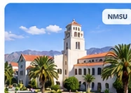
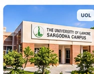
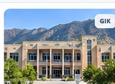
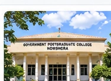
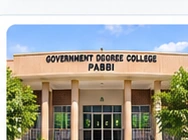

Teaching & Professional Experience.
Mathematics teaching, mentoring, and academic service across universities and colleges.

Graduate Teaching Assistant
New Mexico State University
Las Cruces, New Mexico, USA
Supporting undergraduate instruction and assessment in Ordinary Differential Equations and Linear Algebra.

Lecturer, Mathematics
University of Lahore — Sargodha Campus
Sargodha, Punjab, Pakistan
Taught nine mathematics courses across three terms; coordinated departmental timetables and mentored a graduate student.

Teaching Assistant
Ghulam Ishaq Khan Institute of Engineering Sciences and Technology
Topi, Khyber Pakhtunkhwa, Pakistan
Supported quantitative and engineering mathematics courses during graduate study.

Visiting Lecturer
Government Postgraduate College Nowshera
Nowshera, Khyber Pakhtunkhwa, Pakistan
Taught Basic Algebra, Differential Geometry, and Partial Differential Equations.

Visiting Lecturer
Government Degree College Pabbi
Pabbi, Nowshera, Khyber Pakhtunkhwa, Pakistan
Taught foundational and advanced mathematics topics and mentored undergraduate students.